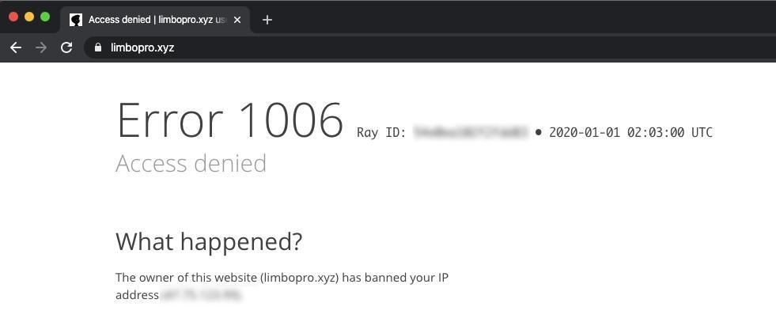
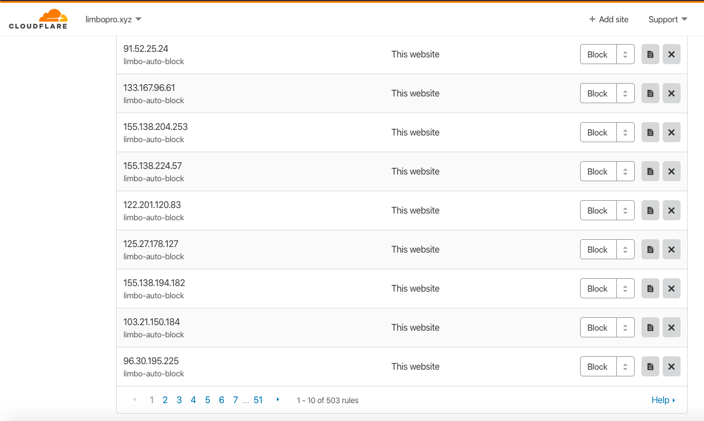
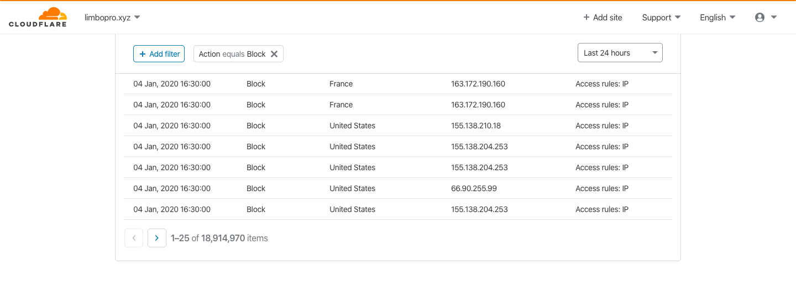
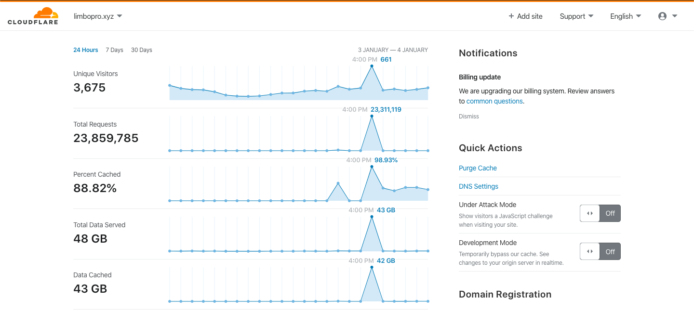
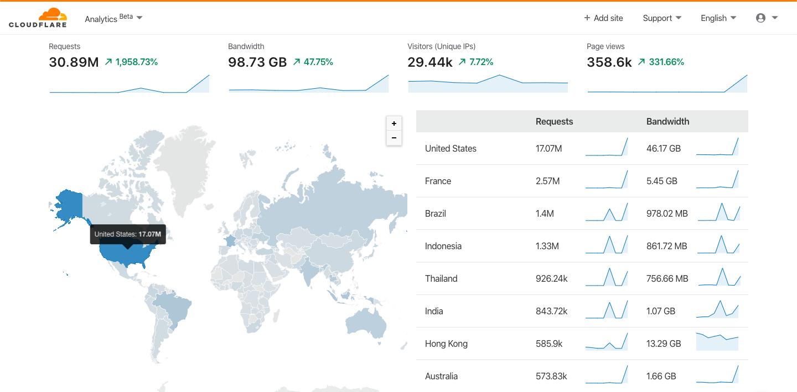

本文隶属于 网站优化 分类，点击分类名称查看更多相关主题；
其他参考资料：DDoS_White_Paper_CN.pdf
主理人说
找这个API已经找了很久了（Cloudflare 的控制面板 Firewall模块下，Cloudflare似乎对它进行了刻意隐藏，后来在 Cloudflare API 资料库找到了详细API使用说明）；（for 循环提交异常IP的脚本，源自 9sep.org博客，在此感谢脚本原作者；
车有车牌，打电话得有电话号码，上网得有个IP地址；IP地址主要有两个功能：标识主机或者网络和寻址。SO？不管是物联网设备也好还是被劫持的肉鸡，归根结底都是一个个在线的IP；所谓DDoS攻击？大概就是不计其数的IP对目标IP发起恶意请求，大白话就是无数的骚扰电话，呼死你；
1.DDoS是什么？Cloudflare 官方说明；
2.如何缓解/清洗/防御DDoS/CC攻击的方法？禁止异常IP与服务器取得联络（不对异常IP提供服务）；
3.无请求便无性能损耗；
本教程及其脚本并非一劳永逸，但能在遭受攻击后，快速且有效地缓解异常请求对服务器的性能损耗；通过对nginx日志进行分析，提取异常IP（短时间内该IP的请求次数超过阈值）并提交至Cloudflare的防火墙（Firewall rules），即，将DDoS/CC攻击IP/代理封锁在Cloudflare CDN前端；除非攻击者有无限的代理IP，否则攻击将会在短时间（看你设置的脚本执行周期以及触发封禁IP的请求阈值）内被清洗干净。DDoS/CC防御 100%？我觉得还行（如果你用其他CDN，亦可参考本文；同理）。
第一步 安装模块
Cloudflare 下 Nginx 获取用户真实IP 地址
当您的网站流量路由经过 Cloudflare 时，我们充当反向代理。 这允许 Cloudflare 通过更有 效地路由数据包并缓存静态资源（图片、JavaScript、CSS 等）来加快页面加载时间。因此， 在响应请求并记录请求时，您的源 Web 服务器默认情况下会看到 Cloudflare IP 地址。
Cloudflare 会在名为 CF-Connecting-IP 的附加 HTTP 标头中添加实际的访问者 IP 地址。但是，如果您有其他依赖于真实访问者的IP 地址的应用程序，则可能会出现某些问题。
参考：恢复原始访问者 IP：使用 mod_cloudflare 记录访问者 IP 地址
Nginx vhost 单个域名配置示例
include /usr/local/nginx/conf/webp.conf; #Webp
##WAF配置
lua_package_path "/usr/local/nginx/conf/vhost/waf/?.lua;;";
lua_shared_dict limit 20m;
init_by_lua_file /home/vhost/waf/init.lua;
access_by_lua_file /home/vhost/waf/waf.lua;
##WAF配置
limit_conn_zone $binary_remote_addr zone=one:10m;
#limit_conn_zone $binary_remote_addr zone=two:10m;
#获取用户真实IP，并赋值给变量$clientRealIP
map $http_x_forwarded_for $clientRealIp {
"" $remote_addr;
~^(?P<firstAddr>[0-9\.]+),?.*$ $firstAddr;
}
limit_req_zone $clientRealIP zone=ConnLimitZone:20m rate=1r/s; #每秒最多1个请求
limit_req_log_level notice;
#limit_req zone=ConnLimitZone burst=10 nodelay; #允许10个请求突发
limit_req_status 403; #突发15个/s，则有4个请求会返回403；
server
{
listen 443 ssl http2;
#listen [::]:80;
server_name limbopro.xyz ;
include /home/whitelist.conf;
include /home/ip.blacklist.auto.echo.conf;
include /home/vhost/blacklist.conf; #看不顺眼
##从CF IP 请求报头中提取真实用户IP
set_real_ip_from 103.21.244.0/22;
set_real_ip_from 103.22.200.0/22;
set_real_ip_from 103.31.4.0/22;
set_real_ip_from 104.16.0.0/12;
set_real_ip_from 108.162.192.0/18;
set_real_ip_from 131.0.72.0/22;
set_real_ip_from 141.101.64.0/18;
set_real_ip_from 162.158.0.0/15;
set_real_ip_from 172.64.0.0/13;
set_real_ip_from 173.245.48.0/20;
set_real_ip_from 188.114.96.0/20;
set_real_ip_from 190.93.240.0/20;
set_real_ip_from 197.234.240.0/22;
set_real_ip_from 198.41.128.0/17;
set_real_ip_from 2400:cb00::/32;
set_real_ip_from 2606:4700::/32;
set_real_ip_from 2803:f800::/32;
set_real_ip_from 2405:b500::/32;
set_real_ip_from 2405:8100::/32;
set_real_ip_from 2c0f:f248::/32;
set_real_ip_from 2a06:98c0::/29;
real_ip_header CF-Connecting-IP;
##从CF IP 请求报头中提取真实用户IP
index index.php index.html;
#index index.php
root /home/wwwroot/typecho/;
#开启SSL
#ssl on;
ssl_certificate /etc/**.pem;
ssl_certificate_key /etc/**key.pem;
ssl_protocols TLSv1 TLSv1.1 TLSv1.2 TLSv1.3;
ssl_ciphers HIGH:!aNULL:!MD5;
##自定义403页面
#502 error pages 设置开始
error_page 403 /403.html;
location = /403.html {
#root html;
allow all;
}
##自定义502页面等
error_page 500 502 503 504 /50x.html;
location = /50x.html {
#root html;
allow all;
}
client_max_body_size 1024m;
## Webp 图片按浏览器判定是否加载（Safari with jpg/Chrome with Webp）
location ~ .*\.(gif|jpg|jpeg|png)$ {
add_header Cache-Control "public, no-transform";
add_header Vary "Accept-Encoding";
try_files $uri$webp_suffix $uri =404;
expires max;
access_log off;
}
## Deny access to PHP files in specific directory
location ~ /(wp-content|uploads|wp-includes|images)/.*\.php$ { deny all; }
include enable-php-pathinfo.conf;
## 静态资源流控开始
location ~ .*\.(jpeg|jpg|png|webp|gif|zip|js|css|woff2|mp4|ico|woff|mp3|pdf|mobi|epub|azw3|eot?7176355|eot|map)?$
{
expires max;
access_log off;
limit_conn one 3; #最大同时开启3个链接数
limit_rate_after 2m; #前2MB资源下载不限速
limit_rate 512k; #下载完2MB后限速512Kb/s
#limit_req zone=ConnLimitZone burst=144 nodelay;
fastcgi_param HTTPS on;
include /etc/nginx/fastcgi_params;
}
## 静态资源流控结束
#伪静态 开始
if (-f $request_filename/index.html){
rewrite (.*) $1/index.html break;
}
if (-f $request_filename/index.php){
rewrite (.*) $1/index.php;
}
if (!-e $request_filename){
rewrite (.*) /index.php;
}
#伪静态 结束
## 禁用不安全的HTTP方法
if ($request_method !~ ^(GET|HEAD|POST)$ ) {
return 403;
}
#
access_log /home/wwwlogs/limbopro.xyz/access.log;
}
第二步 制作IP黑名单
禁止ip频繁访问及自动拉黑名单，防CC/DDoS攻击的一般性方法
以前我们对异常请求的IP进行封禁，即从nginx输出层面，返回403状态码，以减轻服务器压力；现在我们直接把收集到的异常IP，通过脚本自动提交至 Cloudflare 防火墙以实现从CDN前端进行封禁处理，自此该IP任何请求将不会到达源站服务器；
*注：短时间内IP发出大量请求，简单判定为异常，并将该IP加入黑名单即可；
拉黑IP教程概要
拉取/提取临时日志，分析临时日志，判定异常，生成异常IP列表，提交异常IP至Cloudflare；
第一步，拉取一定时间范围内的请求日志
这一步你只需填写原始日志的正确位置，以及临时日志的存放位置即可；
> /home/f5.log; #每次拉取临时日志时清除上一次拉取的遗留下来的临时日志
## 拉取临时日志
function define()
{
ori_log_path="/home/wwwlogs/limbopro.xyz/access.log" #原始日志
tmp_log_path="/home/f5.log" #拉取临时日志存放的位置
date_stamp=`date -d "-2min" +%Y:%H:%M:%S` #从原始日志处读取最近2分钟的日志记录并存储至临时日志处存放，这个2可以改为任意数字但不应该超过日志记录的起止期限
day_stamp=`date +%d`
}
function gather()
{
awk -F '[/ "\[]' -vnstamp="$date_stamp" -vdstamp="$day_stamp" '$7>=nstamp && $5==dstamp' ${ori_log_path} > ${tmp_log_path}; #拉取日志
log_num=`cat ${tmp_log_path} | wc -l`; #计算请求次数
request_time=`awk '{print $(NF-1)}' ${tmp_log_path} | awk '{sum+=$1}END{print sum}'`; #请求时间
ave_request_time=`echo | awk "{print ${request_time}/${log_num}}" `; #平均请求时间
ipcounts=$(awk '{print $1}' ${tmp_log_path} | sort -n | uniq | wc -l); #统计IP个数
date=$(env LANG=en_US.UTF-8 date "+%e/%b/%Y/%R")
}
function output()
{
date=$(env LANG=en_US.UTF-8 date "+%e/%b/%Y/%R")
}
function main()
{
define
gather
output
}
main从原始日志处/home/wwwlogs/limbopro.xyz/access.log(以实际为准)拉取临时日志，并存放在/home/f5.log（你可自定义），然后对该临时日志进行分析；
第二步，判定异常并制作黑名单
这一步你只需定义黑名单存放位置（务必使用.conf后缀），以及单独拎出IP列表即下方的/home/cf.conf；
##第三步 拉黑名单
date=$(env LANG=en_US.UTF-8 date "+%e/%b/%Y/%R")
blockip=/home/f5.conf #nginx封禁配置
cfblockip=/home/cf.conf #定义IP黑名单集合留作给CF用
access=/home/f5.log #读取临时日志
for ip in $(awk '{cnt[$1]++;}END{for(i in cnt){printf("%s\t%s\n", cnt[i], i);}}' ${access} | awk '{if($1>40) print $2}')
##请求次数超过40次即封禁 {if($1>40)
do
echo "deny ${ip};" >> $blockip
echo "${ip}" >> $cfblockip
done
lnmp nginx reload;第三步，配置 nginx.conf 使之生效 （按理说，有了第四步，第三步或可不要）
...
server
{
listen 443 ssl http2;
server_name limbopro.xyz ;
include /home/whitelist.conf;
include /home/f5.conf; #频繁刷新第一次
...
}配置 nginx.conf，添加 /home/f5.conf 至 nginx.conf 配置文件，重启nginx即可生效；异常请求IP再次对网站发起请求时将会获得403状态码；
第四步，提交黑名单至 Cloudflare

via Cloudflare CDN 工作原理示意图；
就算在nginx这里就返回了403状态码，但异常请求仍会对服务器性能造成损耗，所以我们只能从 Cloudflare 防火墙层面对异常请求进行封堵即可（参考Cloudflare CDN 工作原理示意图可见一二）；

#!/bin/bash
# Author: Zhys
# Date : 2018
# blog : https://www.9sep.org/
CFEMAIL="Cloudflare 邮箱账号"
CFAPIKEY="Cloudflare APIKEY" #Cloudflare 控制面板-页面右上角-My Profile-API Tokens-API Keys-Global API Key 可以找到；
ZONESID="Cloudflare ZONE ID" #Cloudflare 控制面板-Overview 模块- 右侧栏 - API-ZONE ID可以找到
IPADDR=$(</home/cf.conf) #
for IPADDR in ${IPADDR[@]}; do
echo $IPADDR
curl -s -X POST "https://api.cloudflare.com/client/v4/zones/$ZONESID/firewall/access_rules/rules" \
-H "X-Auth-Email: $CFEMAIL" \
-H "X-Auth-Key: $CFAPIKEY" \
-H "Content-Type: application/json" \
--data '{"mode":"block","configuration":{"target":"ip","value":"'$IPADDR'"},"notes":"limbo-auto-block"}'
donecf 自封禁完全脚本来自 9sep.org，另，我 for 循环不大会写，虽然看得懂；
大家可以把这三步做成一个脚本，使用 Crontab 命令自动执行即可。
以上。
效果展示




via https://t.me/limboprossr/1220
IP Access Rules 的说明
可登入Cloudflare-Firewall-Tools 模块下查看；
IP Access Rules can be based on IP address, IP address range, Autonomous System Number (ASN) or country.即可基于 IP地址/IP段/自治系统号/国家，进行相应操作，例如：
What option should I choose?
Block: Ensures that an IP address will never be allowed to access your website
Challenge: Specified IP addresses will be shown a CAPTCHA before being allowed to access your website
JavaScript Challenge: The JavaScript challenge page requires the visitor to wait 5 seconds while Cloudflare determines if the visitor is coming from a real browser. The challenge requires the visitor's browser to answer a math problem which takes a bit of time to compute. Once successfully answered, the browser will be remembered and won't be challenged again.
Whitelist: Ensures that an IP address will never be blocked from accessing your website. The IP may still be mitigated if part of a DDoS attack. Only use for verified IPs that you trust!
What can IP Access Rules be applied to?
IP Access Rules can be applied based on:
IP address
IP address range: Cloudflare accepts the following CIDR notations: /16 and /24 for IPv4 addresses and /64, /48, and /32 for IPv6
Autonomous System Number (ASN): An ASN is the unique identifier for any network, such as the Cloudflare network (AS13335). The accepted format for ASN's is "AS12345"
Country: Specified using ISO 2-letter country codes, such as "US" for the United States
You can apply IP Access Rules to this domain only or all domains in your account.
To modify an existing Access Rule, create a new Access Rule and delete the existing one.Block（黑名单）/Challenge（验证码）/JavaScript Challenge(五秒盾)/Whitelist（白名单），按理说如果你是非 Cloudflare 付费用户，你只能一个一个Rule（规则）的添加，这个时候API就显得特别重要（无数量限制，且可制作脚本并利用 Crontab
自动执行实时相应操作）；
Cloudflare API
https://api.cloudflare.com/#user-level-firewall-access-rule-properties
*这个API可以用作提交指定IP至IP Access Rules里面（或可登入Cloudflare-Firewall-Tools-可以进行一个一个添加），批量的，可以进行脚本化，自动化（利用 Crontab 命令定时执行脚本）；
Cloudflare API 档案库：https://api.cloudflare.com/ ，例如利用脚本自动切换防御模式，清除或开启缓存，增加或修改PageRules等等；
cURL 命令
curl命令是一个利用URL规则在命令行下工作的文件传输工具。 它支持文件的上传和下载。 curl支持包括HTTP、HTTPS、ftp等众多协议，还支持POST、cookies、认证、从指定偏移处下载部分文件、用户代理字符串、限速、文件大小、进度条等特征。
via CSDN
cURL 方法
使用 cURL 命令调用Cloudflare User-level Firewall Access Rule API的方法（官方举例）：
curl -X POST "https://api.cloudflare.com/client/v4/user/firewall/access_rules/rules" \
-H "X-Auth-Email: [email protected]" \
-H "X-Auth-Key: c2547eb745079dac9320b638f5e225cf483cc5cfdda41" \
-H "Content-Type: application/json" \
--data '{"mode":"challenge","configuration":{"target":"ip","value":"198.51.100.4"},"notes":"This rule is on because of an event that occured on date X"}'Cloudflare 服务器返回成功状态（官方举例）
{
"success": true,
"errors": [],
"messages": [],
"result": {
"id": "92f17202ed8bd63d69a66b86a49a8f6b",
"notes": "This rule is on because of an event that occured on date X",
"allowed_modes": [
"whitelist",
"block",
"challenge",
"js_challenge"
],
"mode": "challenge",
"configuration": {
"target": "ip",
"value": "198.51.100.4"
},
"created_on": "2014-01-01T05:20:00.12345Z",
"modified_on": "2014-01-01T05:20:00.12345Z",
"scope": {
"id": "7c5dae5552338874e5053f2534d2767a",
"email": "[email protected]",
"type": "user"
}
}
}联系主理人
1.关注频道 https://t.me/limboprossr 不失联；
2.毒奶粉们（我管我的Fans）可联系 TG机器人 或发送 邮件 获取帮助；
3.或点击本页面右下角的聊天按钮联系；
版权属于：毒奶
联系我们： https://limbopro.xyz/6.html
电报频道： https://t.me/limboprossr
推特账号： https://twitter.com/limboprossr
集美账号： https://www.instagram.com/limboprossr/
油管账号 ： http://bit.ly/2VJcz7o/
机场推荐： https://limbopro.xyz/865.html
上网必会： https://limbopro.xyz/archives/2910.html
广告屏蔽： https://limbopro.xyz/archives/adguard.html
实用工具： https://limbopro.xyz/category/tools/
网站优化： https://limbopro.xyz/category/Typecho/
美图欣赏： https://limbopro.xyz/category/instagram/
开车专栏： https://limbopro.xyz/category/NSFW/
返回源站： https://limbopro.github.io（每日0点更新）本文链接：https://limbopro.xyz/archives/6949.html
本文采用 CC BY-NC-SA 4.0 许可协议 ，转载和引用时请注意遵守协议！


{kind=link}